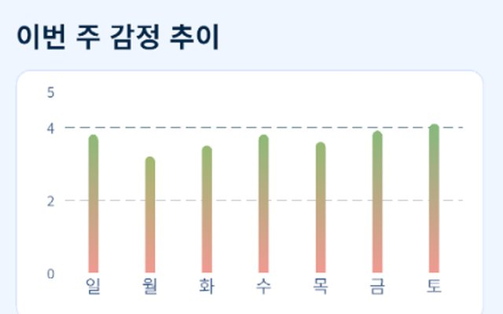
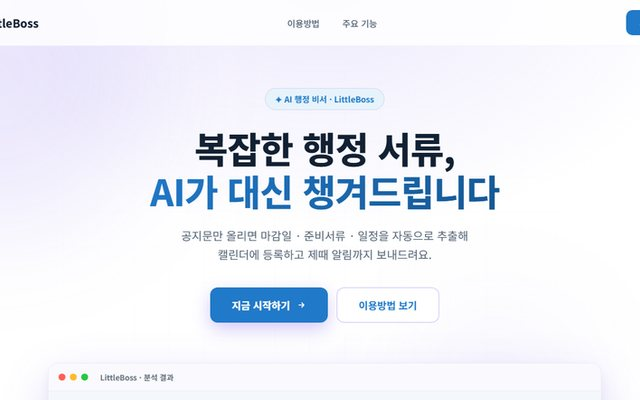
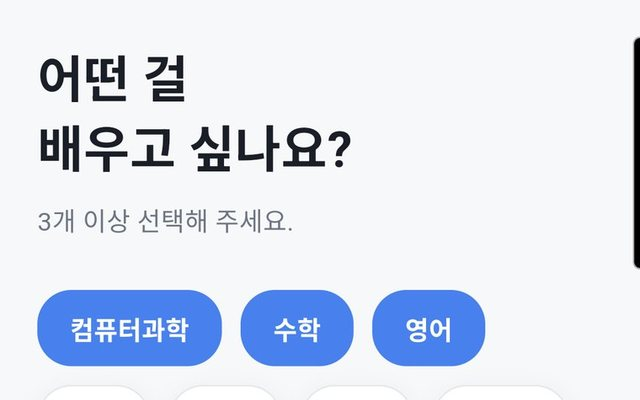
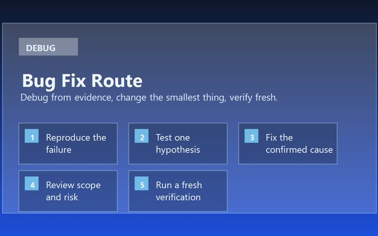
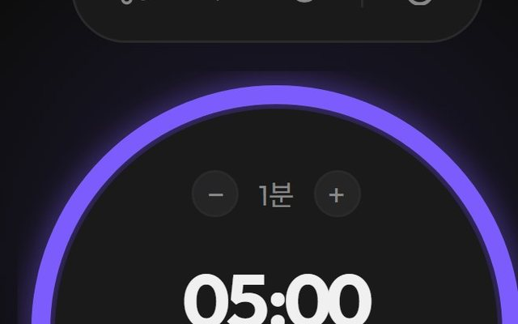

AI · LLM
 Amazon Bedrock
Amazon Bedrock Claude
Claude Gemini
Gemini- CLOVA
어떤 개발자인지 짧게 소개합니다.
이동찬
AI Service Developer
최우수상 · AI 융합 학술대회
음성 AI 안부 전화, 문서 AI 행정 비서, AI 실습 과정을 만들었습니다. 모델이 맡을 일과 규칙이 맡을 일을 먼저 나누고, 결과는 테스트로 확인합니다.
“AI 출력은 항상 화면·로그·테스트로 끝을 본다.”StudyReel 발표에서
프로젝트에서 중심으로 쓴 기술입니다.
AI 서비스부터 클라우드, 화면까지 직접 만든 작업입니다.

진행 중
최우수상

MIT 공개CloudWatch 알람 6종과 SNS 장애 메일, 지표를 보여 주는 운영현황 페이지.

세 프로젝트의 핵심 설계를 직접 움직여 볼 수 있습니다.
통화 중 · 실시간
오늘은 무릎이 좀 쑤시네.
듣기 · CLOVA Speech무릎이 쑤시셨군요. 오늘 많이 걸으셨어요?
답하기 · CLOVA Studio통화 후 · 점수
통화 후 · 기록
“오늘은 무릎이 좀 쑤시네.”
발화 원문만 저장모름
먹었다 · 안 먹었다 · 모름진단 표현이 섞이면 버림
모델 응답
파싱 단계
화면에 보이는 결과
AGENTS.md 한 파일에.Keel · 작업 한 번
Route: execute → review-verifyFiles · Changes · Verification · RiskHypothesis · Test · ResultStudyReel · 결정 기록
3DayOfAI · 실습 32개
챗봇 → RAG → 에이전트
Streamlit · Snowflake Cortex
경력, 수상, 자격을 시간 순으로 정리했습니다.
교수님 회사 의뢰 · 1인 작업. CloudWatch 알람 6종, SNS 장애 메일, 운영현황 페이지.
한국인공지능융합기술학회 · LittleBoss로 논문 심사와 현장 발표.
Technical Trainer 주니어. 대학 교직원·학생 AWS 실습 교육, AI 실습 32개 설계.
AIF-C01 취득.
YourConnect · AI 채용 추천 서비스의 프론트엔드.
신구대학교 컴퓨터소프트웨어과. 성적우수장학금 2회 · 모범장학금 3회.
AI 서비스를 함께 만들 기회를 찾고 있습니다.